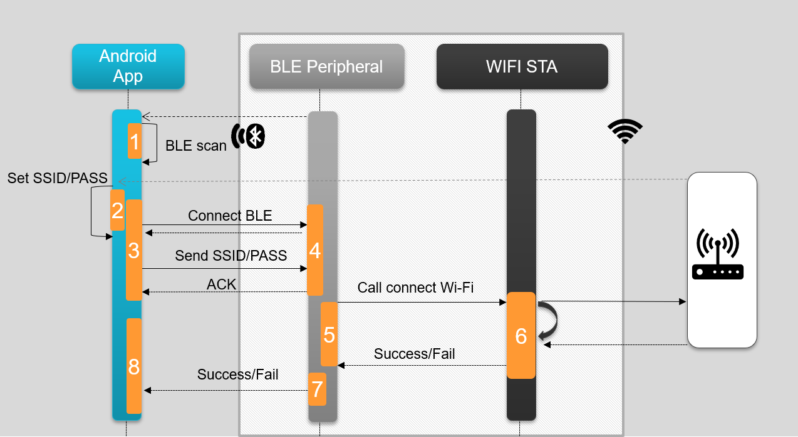

Running BLE Provisioning¶
Overview
The BLE Wi-Fi provisioning example demonstrates how the BLE functionality of the CC35xx can be used to provision it to a Wi-Fi AP of the user’s choice. This works by passing the Wi-Fi AP credentials to the CC35xx via BLE using a phone or a similar device.
The provisioning sequence is shown below where a user scans for BLE devices, connects to the CC35xx BLE peripheral and passes the Wi-Fi credentials.
{kind=link}

Fig. 5 Provisioning Sequence.
How to run Wi-Fi Provisioning Demo
- Flash the Ble Wifi Provisioning example as explained in quick start guide
- Install a BLE app on your phone or device (`SimpleLink Connect App`_)
- Launch the example and open up a terminal. The following should appear on the terminal.
{kind=link}
Provisioning Sequence.
- Connect to the CC35xx BLE device. It is advertised as cc35xxble
{kind=link}
- Once connected you will see a list of available services. Open the Wifi Provisioning over BLE service
{kind=link}
- Next enter the SSID and Password (if one is needed) into the phone app
{kind=link}
- If there was successful WIFI connection the status will change to connected.
{kind=link}